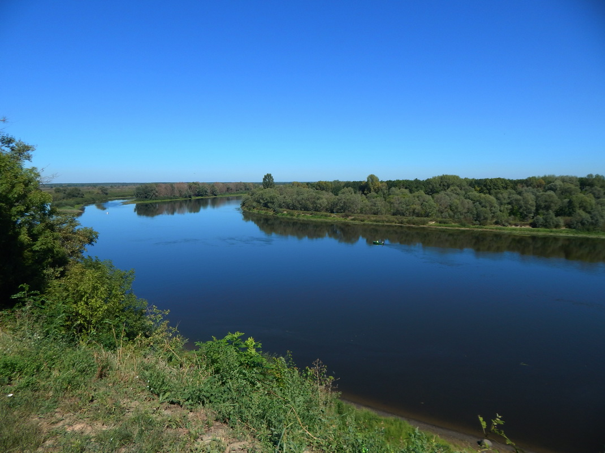
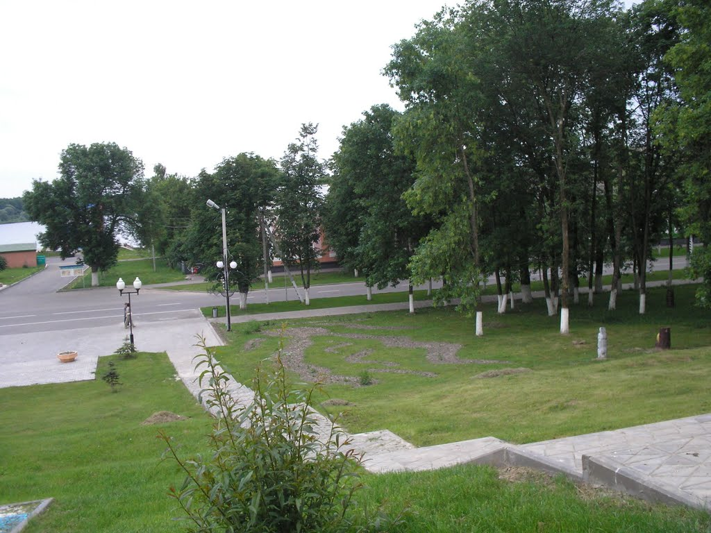

происхождение названия
Топоним «Лоев» произошел от личного имени «Лой», первоначальный смысл которого — толстый, полный, грузный. Некоторые специалисты считают, что название связано с понятием «лонва» — большая многоместная лодка. Лоев находится на важных торговых путях, поэтому весьма вероятно, что поселок мог возникнуть при лонве, которая стояла у берега и играла роль пристани.
история города
Согласно археологическим сведениям, в X—XI вв. на Замковой горе существовало древнее поселение дреговичей, которое входило в состав Черниговского княжества. В XIV ст. Лоев присоединился к Великому княжеству Литовскому. В это время на правом берегу Днепра построили замок, а вокруг него — поселение.
Первое известие о Лоеве появилось в 1505 году и селение называлось тогда Лоева Гора. Лоев разрастался вокруг построенного замка. Поселение не раз становилось ареной битв между ВКЛ и украинскими казаками, войсками Речи Посполитой и России. Особенно сильно Лоев пострадал в середине 17 столетия, когда во время военных действий был полностью опустошен. С конца 18 века принадлежал Российской империи и был центром волости Речицкого повета Минской губернии. С 1919 г. — в составе Минской области БССР, а позже — Гомельской области РСФСР. В мае-июне 1920 г. Лоев был оккупирован польскими войсками. С 1926 г. Лоев снова вошел в состав БССР, став центром района. С 1938 г. имеет статус городского поселка. Недолго, с 1962 по 1966 гг., был частью Речицкого района, после чего вновь стал райцентром.

Лоевский музей «Битвы за Днепр»
/01.jpg "галерея(нажмите для просмотра)")
Лоевский музей «Битвы за Днепр» открылся посетителям в 1985 году. Он стал очередным филиалом Белорусского государственного музея истории Великой Отечественной войны.
На сегодня фонд музея составляет более 4 000 экспонатов. Все выставочные единицы объединены одной темой - борьба с немецко-фашистскими захватчиками на белорусской земле. В музее часто проводят встречи с ветеранами, устраивают концерты и тематические вечера, военно-исторические конференции и акции, а также дни памяти.
Основная экспозиция музея рассказывает о форсировании реки Днепр солдатами Центрального фронта под командованием К.К. Рокоссовского. Точно и подробно освящены боевые действия 61 и 65 армий, происходившие на Лоевском плацдарме. Также посетители узнают, как был освобождён район и о деятельности партизанского движения на Лоевщине.
Среди экспонатов много документальных сведений о земляках-солдатах, представлены подручные средства переправы, воинское снаряжение и даже частные коллекции оружия. Особый интерес представляют боевые награды и личные фотографии фронтовиков, а также партизанский дневник и стенгазета антифашистского содержания.
Музей имеет и открытую выставочную площадку, на которой представлены образцы боевой техники, участвующей в боях на берегу Днепра. Туристический маршрут названный «Золотое кольцо Гомельщины» включен в экскурсии музея.
Дом купца Наума Долгина
/01.jpg "галерея(нажмите для просмотра)")
Расположен в городском поселке Лоев, по адресу: улица Советская, 1. Памятник архитектуры с элементами неоклассицизма. Выполнен из кирпича.
Прямоугольный в плане двухэтажный дом, накрытый 4-хскатной вальмовой крышей. Главный фасад разделен по вертикали сложным карнизом с орнаментом и сухариками, по горизонтали проходит ритм рустованных лопаток. Поверхность стены первого этажа прорезана лучковыми оконными проемами, которые украшены замковым камнем. Окна второго этажа декорированы наличниками, сандриками и орнаментом. Система планировки коридорная.
Построен в 1847 году и является самым старым зданием в г. п. Лоев. В начале XX века его левая часть была перестроена. В 1997 году началась масштабная реконструкция памятника, которая завершилась в 2004 году к 500-летию Лоева. Сейчас в этом здании расположены районная и детская библиотеки, а также районный отдел культуры.
Внесен в Государственный список историко-культурных ценностей Республики Беларусь.
